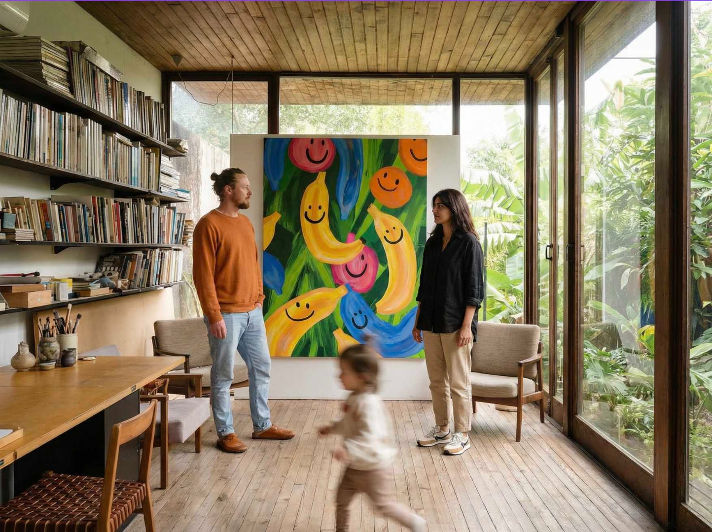

BUBU Studio
Old Paphos, Cyprus. Studio in the making. Opening 2026.
BUBU Studio is a design studio for interior, product and aesthetics, and the home of drip tufting, the hand-tufting technique Jan Fechner developed. It brings together the tastes, interests and roots of its founders in a single home for beauty. The love for distinctive design did not begin with the studio, it began long before, in two different lives that were already moving towards each other. Jan comes from the design and marketing world, trained in how form meets message and how an idea becomes something people want to live with. Alizay studied art and carries with her a knowledge of design and interior shaped in Pakistan, where colour, pattern and craft belong to everyday life.
The name, playful and light, is where the story turns into a place. Everything started with a search for beautiful, high-contrast art for a children's room, not just something to hang on the wall but something a child could also live with on the floor. One question led to another, and the floor became the next obsession. Tufting. The shaping of textile. A craft that turns colour into surface, and surface into a place. What began in a nursery grew into a studio. Founded by Alizay and Jan in 2025, BUBU Studio now works where materials meet ideas, and where experimentation is the only method we trust.
Liquid Mountains is the first collection by Jan Fechner, and it pictures a Cypriot summer. Sun without mercy, heat that presses down on stone, a land so dry that almost nothing survives on it. Only small patches of green hold on, scattered across an otherwise bare and rocky landscape. The heat feels strong enough to melt even the mountains themselves, and that image of stone turning soft and fluid became the starting point for the collection. Into that heat Jan folds the colours of spring and the energy of sun and light, the pink and orange of a sunrise, the deep red of a sunset, the blue of the sea that never leaves the view in Cyprus. Poppy, bold colour meets bare, sunburnt ground. Form and colour are the language. Every piece is hand tufted wool, the fibre sourced from Northern Pakistan. Originals and studies are tufted by hand by Jan in the Paphos studio. Editions are produced with partner workshops in Pakistan and finished in Paphos. From Jan Fechner's hands into the world.
What drives us
- Experimental by nature. We try, fail, and try again. That is where the good stuff lives.
- Craft over perfection. Every imperfection tells a story worth keeping.
- Community first. We love people. We love making things together.
- Joy in the process. Making things should feel good, every step of the way.
What we do
- Liquid Mountains, the first collection by Jan Fechner. Studies in tufted wool.
- Custom work for architects and interior designers on request.
- Workshops with live tufting once the studio opens in Old Paphos.
- Studio visits by appointment, once we open.
Location
Old Paphos, Cyprus. The studio is in the making. Opening 2026.